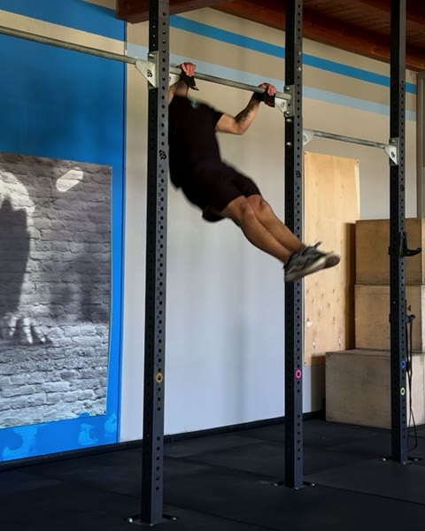
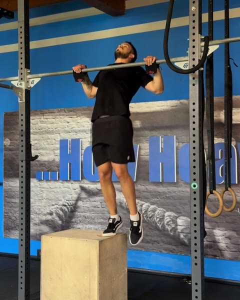

Guida gratuita
Butterfly Chest to Bar:
da dove parti
Tre test per trovare il tuo gradino. Due giorni da alternare per salirlo.
Filipe Ramos · coach di ginnastica · @coachfiliperamos
Scarica il PDFIl disegno è quello del butterfly pull up. Cambiano i gomiti, che puntano più indietro, e l'altezza: adesso è il petto che deve arrivare alla sbarra.
Per prendere quell'altezza si torna sul box, prima con due piedi e poi con uno, e ogni ripetizione va portata più in alto che puoi. Questo programma parte dal presupposto che il butterfly pull up lo fai già bene. Se non è così, comincia dalla guida del Butterfly Pull Up. Questa è la scala del programma Butterfly Chest to Bar dell'app FAR Training.
1. Il test: trova il tuo gradino
Fai i test in ordine, riposando quanto ti serve tra uno e l'altro. Ti fermi al primo che non passi: quello è il tuo gradino.
-
 0
0Butterfly Pull Up
Ripetizioni legate e pulite. È il punto di partenza. Se il cerchio non è ancora tuo, parti dalla guida del Butterfly Pull Up.
-

1One Leg Box Butterfly Chest to Bar
5 ripetizioni per lato. Un piede sul box. Braccia e gambe coordinate, più in alto del butterfly pull up: il petto tocca la sbarra.
-
2
Butterfly Chest to Bar
3 serie al massimo, 3' di recupero. Senza box, legati, senza perdere la tecnica.
Passi anche il 2? Il butterfly chest to bar ce l'hai, e il tuo massimo è il numero da cui parte il lavoro di resistenza.
2. Cosa allenare sul tuo gradino
Due giorni da alternare, A e B, tutti di fila: A, B, A, B. Tutti e due si aprono con i Butterfly Scapular Pull Up, con i gomiti che puntano più indietro che nel butterfly pull up, e poi il drill sul box del tuo gradino. Nel giorno A seguono serie corte di Butterfly Pull Up: a ogni ripetizione cerca più altezza che puoi, come sul box. Nel giorno B lo Strict Chest to Bar, esplosivo, a percentuale del tuo massimo di ripetizioni. Sono le dosi con cui si parte nell'app. Quando il lavoro diventa facile, rifai il test del tuo gradino.
Gradino 1 Non passi il test 1
| Giorno A | Dose | Recupero |
|---|---|---|
| Butterfly Scapular Pull Up | 2 × 10 | 30" |
| Two Leg Box Butterfly Chest to Bar | 3 × 10 | 1' |
| Butterfly Pull Up | 5 × 3 | 1' |
| Giorno B | Dose | Recupero |
| Butterfly Scapular Pull Up | 2 × 10 | 30" |
| Two Leg Box Butterfly Chest to Bar | 3 × 10 | 1' |
| Strict Chest to Bar | 3 × 30% | 1' |
Gradino 2 Non passi il test 2
| Giorno A | Dose | Recupero |
|---|---|---|
| Butterfly Scapular Pull Up | 2 × 10 | 30" |
| One Leg Box Butterfly Chest to Bar | 3 × 5/lato | 1' |
| Butterfly Pull Up | 5 × 4 | 1' |
| Giorno B | Dose | Recupero |
| Butterfly Scapular Pull Up | 2 × 10 | 30" |
| One Leg Box Butterfly Chest to Bar | 3 × 5/lato | 1' |
| Strict Chest to Bar | 3 × 35% | 1' |
Il programma completo
Nell'app FAR Training ogni gradino è una fase intera: la progressione delle dosi giorno per giorno, il video di ogni esercizio e il test di fase alla fine. Dopo le due fasi per impararlo ce n'è una terza da ripetere, con le percentuali del tuo massimo, un AMRAP, un Tabata e un giorno che chiede il doppio del tuo massimo. Il programma Butterfly Chest to Bar arriva sull'app: segui @fartraining per sapere quando esce.
Non sai se hai passato un test? Mandami il video in DM su @coachfiliperamos e ti dico da che gradino partire.
Apri @coachfiliperamos